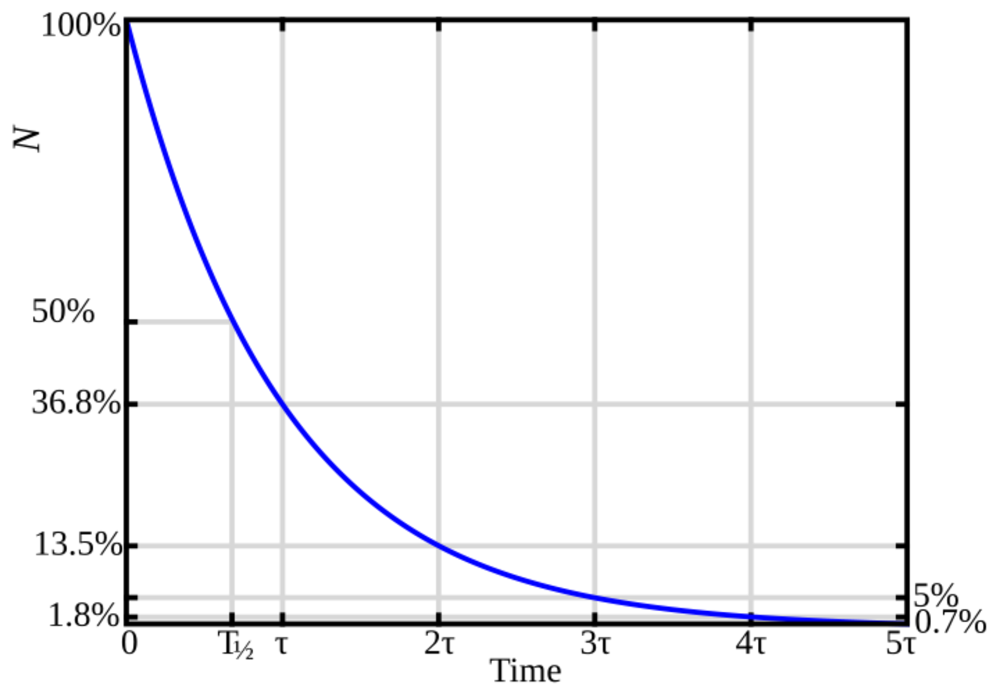
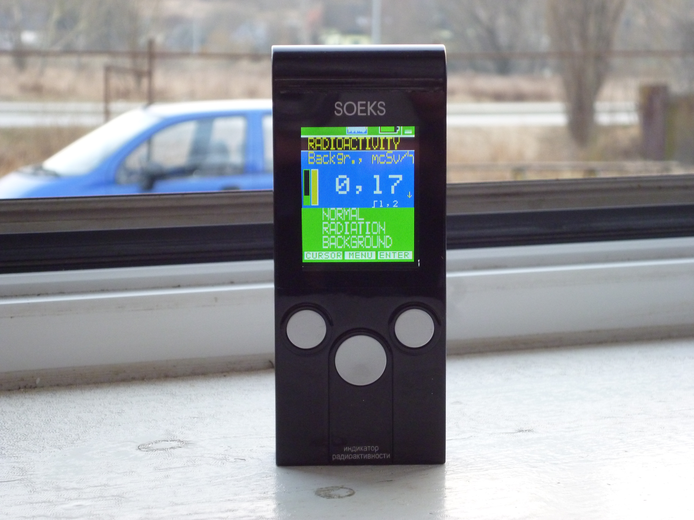

Aula 3 - Decaimento Radioativo Natural
Física Moderna 2
Introdução
O decaimento radioativo é um fenômeno natural em que núcleos atômicos instáveis se transformam em núcleos mais estáveis, emitindo partículas, radiação eletromagnética ou ambas. A descoberta da radioatividade, no fim do século XIX, mudou a maneira como entendemos a matéria: o átomo deixou de ser visto como uma estrutura indivisível e passou a ser investigado por sua constituição interna e por sua energia nuclear.
Nesta aula, vamos estudar a regularidade estatística do decaimento. Um núcleo isolado não decai em um instante previsível por um relógio determinístico. Para ele, falamos em probabilidade por unidade de tempo. Uma amostra macroscópica, porém, contém tantos núcleos que o comportamento coletivo se torna muito bem descrito por uma lei exponencial.
Esse resultado aparece em muitas aplicações: datação por carbono-14, medicina nuclear, radioterapia, monitoração ambiental, estudo de rochas e operação de detectores de radiação. Para trabalhar com essas situações, precisamos distinguir cuidadosamente número de núcleos, atividade da fonte, taxa de contagem do detector, meia-vida e vida média.
Objetivos
Ao final desta aula, devemos ser capazes de:
- compreender a radioatividade como um processo estatístico;
- demonstrar a lei do decaimento radioativo a partir da hipótese de proporcionalidade;
- explicar os conceitos de constante de decaimento, atividade, meia-vida e vida média;
- converter unidades de massa, tempo e atividade em problemas nucleares;
- distinguir atividade da fonte, contagem do detector e radiação de fundo;
- aplicar os conceitos em exercícios de carbono-14, potássio-40, iodo-131, ouro-198 e cobalto-60.
Radioatividade
Um nuclídeo é caracterizado por seu número atômico \(Z\), seu número de nêutrons \(N\) e seu número de massa \(A=Z+N\). Nem toda combinação de prótons e nêutrons é estável. Quando a configuração nuclear possui energia em excesso, ou quando a razão entre nêutrons e prótons está fora da região de estabilidade, o núcleo pode sofrer uma transformação espontânea.
Chamamos essa transformação de decaimento radioativo. O núcleo inicial é chamado de núcleo-pai; o núcleo produzido é chamado de núcleo-filho. Dependendo do caso, o processo pode emitir partículas alfa, partículas beta, neutrinos, raios gama ou combinações dessas emissões.
O estudo da radioatividade começou em 1896, pouco depois da descoberta dos raios X por Wilhelm Röntgen. Henri Becquerel observou uma radiação emitida por sais de urânio. Marie Curie, Pierre Curie, Ernest Rutherford e outros pesquisadores mostraram que essa radiação não era única: havia emissões com cargas, massas e poderes de penetração diferentes. Daí surgiram as denominações alfa, beta e gama.
Há dois pontos importantes para evitar interpretações apressadas. Primeiro, a radioatividade é natural: elementos como carbono-14, potássio-40 e urânio aparecem em materiais encontrados na Terra. Segundo, dizer que algo é radioativo ainda não informa automaticamente o risco. Para discutir efeito biológico, precisamos saber tipo de radiação, energia, atividade, distância, tempo de exposição, blindagem e geometria de medida.
Lei do Decaimento
Considere uma amostra que contém \(N(t)\) núcleos radioativos ainda não decaídos no instante \(t\). Em um intervalo de tempo pequeno \(dt\), esperamos que o número médio de decaimentos seja proporcional ao número de núcleos disponíveis. Se há muitos núcleos, muitos podem decair no próximo intervalo; se restam poucos, a taxa absoluta diminui.
Escrevemos:
\[ dN=-\lambda N\,dt. \]
O sinal negativo indica que \(N\) diminui. A constante \(\lambda\) é a constante de decaimento ou constante de desintegração. Ela representa a probabilidade de decaimento por unidade de tempo para cada núcleo. Assim, se o tempo é medido em segundos, \(\lambda\) tem unidade \(\text{s}^{-1}\); se o tempo é medido em anos, \(\lambda\) tem unidade \(\text{ano}^{-1}\).
Separando as variáveis,
\[ \frac{dN}{N}=-\lambda\,dt. \]
Agora integramos entre o estado inicial, \(N=N_0\) em \(t=0\), e o estado posterior, \(N=N(t)\) em \(t\):
\[ \int_{N_0}^{N}\frac{dN'}{N'}=-\lambda\int_0^t dt'. \]
O lado esquerdo resulta em \(\ln N-\ln N_0\), e o lado direito resulta em \(-\lambda t\). Logo,
\[ \ln N-\ln N_0=-\lambda t. \]
Usando \(\ln a-\ln b=\ln(a/b)\):
\[ \ln\left(\frac{N}{N_0}\right)=-\lambda t. \]
Elevando os dois lados como potência de \(e\), obtemos a lei do decaimento:
\[ N=N_0e^{-\lambda t}. \]
Essa equação não quer dizer que cada núcleo perde continuamente uma parte de si. Cada decaimento é um evento discreto. A exponencial descreve o número esperado de núcleos que ainda não decaíram em uma amostra grande.

Neste primeiro gráfico, o eixo horizontal mostra o tempo em múltiplos de \(T_{1/2}\) e o eixo vertical mostra o número de núcleos ainda não decaídos. As linhas tracejadas identificam as frações \(N_0/2\), \(N_0/4\), \(N_0/8\) e \(N_0/16\): em cada intervalo de uma meia-vida, permanece metade da população que havia no intervalo anterior. A curva suave representa a lei exponencial entre esses instantes marcados.
Também é útil escrever a lei em termos da fração remanescente:
\[ \frac{N}{N_0}=e^{-\lambda t}. \]
Essa forma é especialmente prática em datação. Se resta \(25\%\) do material radioativo inicial, então \(N/N_0=0{,}25\). O problema físico passa a ser determinar qual tempo produz essa fração.
Exemplo 3.1: Idade idealizada por carbono-14
Uma amostra orgânica apresenta \(31{,}2\%\) do número inicial de núcleos de \(\ce{^{14}C}\). Sabendo que \(\lambda=1{,}210\times10^{-4}\,\text{ano}^{-1}\), determine o tempo transcorrido em anos.
Solução: Isolando \(t\) na forma logarítmica da lei de decaimento,
\[ t=-\frac{1}{\lambda}\ln\left(\frac{N}{N_0}\right). \]
Como \(N/N_0=0{,}312\),
\[ \begin{aligned} t&=-\frac{1}{1{,}210\times10^{-4}\,\text{ano}^{-1}}\ln(0{,}312)\\ &=9{,}63\times10^3\,\text{anos}. \end{aligned} \]
O intervalo não corresponde a um número inteiro de meias-vidas; por isso, a forma logarítmica é necessária. Em datação real por carbono-14, ainda são necessárias calibração e análise de contaminações; aqui usamos o modelo idealizado.
Exemplo 3.2: Determinação de \(\lambda\) para iodo-131
Uma amostra de \(\ce{^{131}I}\) contém inicialmente \(N_0=8{,}00\times10^{12}\) núcleos. Após \(16{,}08\,\text{dias}\), restam \(N=1{,}80\times10^{12}\) núcleos. Determine a constante de decaimento em \(\text{s}^{-1}\).
Solução: Da lei \(\ln(N/N_0)=-\lambda t\),
\[ \begin{aligned} \lambda&=-\frac{1}{t}\ln\left(\frac{N}{N_0}\right)\\ &=-\frac{1}{16{,}08\,(24)(3600)\,\text{s}}\ln\left(\frac{1{,}80}{8{,}00}\right)\\ &=1{,}07\times10^{-6}\,\text{s}^{-1}. \end{aligned} \]
As unidades de \(\lambda\) são o inverso das unidades escolhidas para o tempo. Nesse caso, a fração remanescente é \(0{,}225\) e \(t=1{,}389\times10^6\,\text{s}\); como a fração não é uma potência simples de \(1/2\), não há atalho por meias-vidas inteiras.
Tempos de Meia-Vida, Atividade e Vida Média
Meia-vida, constante de decaimento, vida média e atividade descrevem o mesmo processo sob perspectivas complementares. A meia-vida indica quando a população cai à metade; \(\lambda\) fornece a probabilidade de decaimento por unidade de tempo; a vida média descreve o tempo médio de sobrevivência; e a atividade informa a taxa de transformações no instante considerado.
Meia-Vida
A meia-vida \(T_{1/2}\) é o tempo necessário para que \(N\) e \(A\) caiam para metade de seus valores iniciais. Conceitualmente, ela responde a uma pergunta coletiva: depois de quanto tempo esperamos que metade dos núcleos de uma amostra ainda esteja radioativa e a outra metade já tenha decaído?
Isso não significa que cada núcleo ``vive’’ exatamente uma meia-vida. Em uma amostra, alguns núcleos decaem muito cedo, outros sobrevivem por várias meias-vidas. A meia-vida é um marcador prático porque divide a população restante ao meio em intervalos iguais. Depois de uma meia-vida, resta metade; depois de outra meia-vida, resta metade da metade; depois de outra, metade do que ainda restou.
Fazendo \(N=N_0/2\) em \(N=N_0e^{-\lambda t}\) e substituindo \(t\) por \(T_{1/2}\):
\[ \frac{N_0}{2}=N_0e^{-\lambda T_{1/2}}. \]
Cancelando \(N_0\):
\[ \frac12=e^{-\lambda T_{1/2}}. \]
Tomando o logaritmo natural:
\[ \ln\left(\frac12\right)=-\lambda T_{1/2}. \]
Como \(\ln(1/2)=-\ln2\):
\[ T_{1/2}=\frac{\ln2}{\lambda}, \qquad \lambda=\frac{\ln2}{T_{1/2}}. \]
Após uma meia-vida resta \(1/2\) da amostra; após duas, resta \(1/4\); após três, resta \(1/8\). De modo geral:
\[ N=N_0\left(\frac12\right)^{t/T_{1/2}}, \qquad A=A_0\left(\frac12\right)^{t/T_{1/2}}. \]
Vida Média
A vida média \(\tau\) tem outro significado. Ela não pergunta quando resta metade da amostra; ela pergunta qual é o tempo médio de sobrevivência dos núcleos se pudéssemos acompanhar muitos núcleos individualmente e registrar o instante de decaimento de cada um.
Como a distribuição de tempos de decaimento é exponencial, muitos núcleos decaem antes de uma vida média, mas existe uma cauda longa de núcleos que sobrevivem por tempos maiores. Essa cauda puxa a média para cima. Por isso, na lei exponencial, a vida média é maior que a meia-vida. A meia-vida marca o ponto em que restam \(50\%\); a vida média marca o ponto em que resta \(1/e\approx36{,}8\%\) da população inicial.
Fazendo \(N=N_0/e\) na lei do decaimento:
\[ \frac{N_0}{e}=N_0e^{-\lambda \tau}. \]
Cancelando \(N_0\):
\[ e^{-1}=e^{-\lambda\tau}. \]
Portanto,
\[ \tau=\frac{1}{\lambda}. \]
Combinando as relações:
\[ \lambda=\frac{\ln2}{T_{1/2}}=\frac{1}{\tau}, \qquad \tau=\frac{T_{1/2}}{\ln2}. \]
Como \(1/\ln2\approx1{,}443\), a vida média é maior que a meia-vida:
\[ \tau\approx1{,}443T_{1/2}. \]

Este segundo gráfico usa a vida média como unidade de tempo. Em \(t=\tau\), a curva chega a \(N/N_0=1/e\approx36{,}8\%\); por isso, a vida média não é o instante em que resta metade da amostra. A marca \(T_{1/2}\) aparece antes de \(\tau\), pois \(T_{1/2}=\tau\ln2\approx0{,}693\tau\) e, nesse ponto, resta \(50\%\). As demais marcas, \(2\tau\), \(3\tau\) e assim por diante, evidenciam a redução contínua da fração remanescente: aproximadamente \(13{,}5\%\) em \(2\tau\), \(5{,}0\%\) em \(3\tau\) e \(1{,}8\%\) em \(4\tau\).
Atividade
Muitas vezes estamos mais interessados na taxa de decaimento do que no número total de núcleos. A taxa de decaimento de uma amostra é a atividade:
\[ A=-\frac{dN}{dt}=\lambda N. \]
Como \(N=N_0e^{-\lambda t}\) e \(A_0=\lambda N_0\),
\[ A=A_0e^{-\lambda t}=A_0\left(\frac12\right)^{t/T_{1/2}}. \]
Portanto, atividade e número de núcleos diminuem com a mesma constante e têm a mesma meia-vida. A unidade SI é o becquerel: \(1\,\text{Bq}=1\,\text{decaimento/s}\). A unidade histórica curie satisfaz \(1\,\text{Ci}=3{,}70\times10^{10}\,\text{Bq}\).
Exemplo 3.3: Iodo-131 — atividade após um intervalo qualquer
Uma fonte de \(\ce{^{131}I}\) tem atividade inicial \(A_0=5{,}00\,\text{mCi}\) e meia-vida \(T_{1/2}=8{,}04\,\text{dias}\). Determine a atividade em mCi após \(19{,}0\,\text{dias}\).
Solução: Como o intervalo não contém um número inteiro de meias-vidas, usamos a forma exponencial:
\[ A=(5{,}00\,\text{mCi})\left(\frac12\right)^{19{,}0/8{,}04}=0{,}972\,\text{mCi}. \]
Exemplo 3.4: Tecnécio-99m — constante e vida média
O \(\ce{^{99m}Tc}\), empregado em exames de medicina nuclear, tem \(T_{1/2}=6{,}01\,\text{h}\). Determine a constante de decaimento em \(\text{h}^{-1}\) e a vida média em horas.
Solução:
\[ \lambda=\frac{\ln2}{T_{1/2}} =\frac{\ln2}{6{,}01\,\text{h}} =0{,}115\,\text{h}^{-1}, \qquad \tau=\frac{1}{\lambda}=8{,}67\,\text{h}. \]
A vida média é maior que a meia-vida, como previsto pela relação \(\tau=1{,}443T_{1/2}\).
Exemplo 3.5: Césio-137 — meia-vida a partir da fração remanescente
Uma amostra de \(\ce{^{137}Cs}\) fica com \(14{,}0\%\) de sua atividade inicial após \(90{,}5\,\text{anos}\). Determine a meia-vida em anos.
Solução: A fração \(0{,}140\) não corresponde a uma potência inteira de \(1/2\). Então,
\[ T_{1/2}=\frac{(90{,}5\,\text{anos})\ln2}{\ln(1/0{,}140)}=31{,}9\,\text{anos}. \]
Exemplo 3.6: Flúor-18 — atividade inicial a partir de uma medida posterior
Uma amostra de \(\ce{^{18}F}\) apresenta atividade de \(125\,\text{MBq}\) após \(2{,}00\times10^2\,\text{min}\). Sabendo que \(T_{1/2}=109{,}8\,\text{min}\), determine a atividade inicial em MBq.
Solução: O tempo não corresponde a um número inteiro de meias-vidas. Isolando \(A_0\),
\[ A_0=A\,2^{t/T_{1/2}} =(125\,\text{MBq})2^{(2{,}00\times10^2)/109{,}8} =442\,\text{MBq}. \]
Quantidade de núcleos em uma amostra
Para usar a lei do decaimento, precisamos conhecer o número inicial de núcleos \(N_0\). A tabela de massas atômicas fornece a massa de cada nuclídeo em unidade de massa atômica (u), usualmente com seis casas decimais. Essa precisão permite trabalhar com a massa do isótopo real, sem aproximá-la apenas pelo número de massa. Se \(M_{\text{kg}}\) é a massa macroscópica da amostra, em kg, e \(M_u\) é a massa de um átomo do radionuclídeo, também em kg, então
\[ N_0=\frac{M_{\text{kg}}}{M_u}. \]
A conversão é
\[ 1\,\text{u}=1{,}661\times10^{-27}\,\text{kg}. \]
Assim, se a tabela informa a massa atômica \(M_{\text{tab}}\) em u, substituímos \(M_u=M_{\text{tab}}(1{,}661\times10^{-27}\,\text{kg/u})\) diretamente na razão para formar uma única cadeia de conversões. Só arredondamos o resultado final. O número de algarismos significativos do resultado é limitado pela grandeza experimental menos precisa. O expoente é negativo: a unidade u representa a escala de massa de um átomo, extremamente menor que 1 kg.
Exemplo 3.7: Núcleos de cobalto-60 e meia-vida
Uma amostra contém \(36{,}7\,\mu\text{g}\) de \(\ce{^{60}_{27}Co}\). A tabela de massas nucleares informa \(M_{\text{tab}}=59{,}933816\,\text{u}\) para esse nuclídeo. Determine o número inicial de núcleos e o número de núcleos remanescentes após \(12{,}0\,\text{anos}\), sabendo que \(T_{1/2}=5{,}27\,\text{anos}\).
Solução: Montamos uma única cadeia de conversões, sem arredondar os valores intermediários:
\[ \begin{aligned} N_0&=\frac{M_{\text{kg}}}{M_u}\\ &=\frac{36{,}7\,\mu\text{g}\left(\frac{1\,\text{kg}}{10^9\,\mu\text{g}}\right)} {(59{,}933816\,\text{u})\left(1{,}661\times10^{-27}\,\frac{\text{kg}}{\text{u}}\right)}\\ &=3{,}69\times10^{17}\,\text{núcleos}. \end{aligned} \]
Os dados \(36{,}7\,\mu\text{g}\) possuem três algarismos significativos; por isso, o resultado é apresentado com três algarismos significativos. Como \(12{,}0/5{,}27\) não é inteiro, aplicamos a forma exponencial sem substituir a fração por uma potência simples:
\[ \begin{aligned} N&=\frac{36{,}7\,\mu\text{g}\left(\frac{1\,\text{kg}}{10^9\,\mu\text{g}}\right)} {(59{,}933816\,\text{u})\left(1{,}661\times10^{-27}\,\frac{\text{kg}}{\text{u}}\right)} \left(\frac12\right)^{12{,}0/5{,}27}\\ &=7{,}61\times10^{16}\,\text{núcleos}. \end{aligned} \]
Exemplo 3.8: Amostra de carbono-11
No instante \(t=0\), uma amostra pura de \(\ce{^{11}_{6}C}\) contém \(3{,}50\,\mu\text{g}\) e tem \(T_{1/2}=20{,}4\,\text{min}\). A tabela informa \(M_{\text{tab}}=11{,}011433\,\text{u}\). Determine: a) a vida média em min; b) a constante de decaimento em \(\text{min}^{-1}\); c) o número inicial de núcleos; d) o número de núcleos após \(5{,}00\,\text{h}\); e) a atividade inicial em Bq; e f) a atividade após \(8{,}00\,\text{h}\) em MBq.
Solução: As duas grandezas temporais são
\[ \begin{aligned} \tau&=\frac{20{,}4\,\text{min}}{\ln2}=29{,}4\,\text{min},\\ \lambda&=\frac{\ln2}{20{,}4\,\text{min}}=3{,}40\times10^{-2}\,\text{min}^{-1}. \end{aligned} \]
Para determinar o número inicial, usamos novamente uma única cadeia de conversões:
\[ \begin{aligned} N_0&=\frac{3{,}50\,\mu\text{g}\left(\frac{1\,\text{kg}}{10^9\,\mu\text{g}}\right)} {(11{,}011433\,\text{u})\left(1{,}661\times10^{-27}\,\frac{\text{kg}}{\text{u}}\right)}\\ &=1{,}91\times10^{17}\,\text{núcleos}. \end{aligned} \]
Os valores medidos possuem três algarismos significativos; por isso, todos os resultados finais deste exemplo serão apresentados com três algarismos significativos. Para \(t=5{,}00\,\text{h}\),
\[ \begin{aligned} N&=\frac{3{,}50\,\mu\text{g}\left(\frac{1\,\text{kg}}{10^9\,\mu\text{g}}\right)} {(11{,}011433\,\text{u})\left(1{,}661\times10^{-27}\,\frac{\text{kg}}{\text{u}}\right)}\\ &\quad\times e^{-\left(\frac{\ln2}{20{,}4\,\text{min}}\right) \left(5{,}00\,\text{h}\right)\left(\frac{60\,\text{min}}{1\,\text{h}}\right)}\\ &=7{,}15\times10^{12}\,\text{núcleos}. \end{aligned} \]
Para a atividade inicial, convertemos minutos para segundos na própria cadeia:
\[ \begin{aligned} A_0&=\left(\frac{\ln2}{20{,}4\,\text{min}}\right) \left(\frac{1\,\text{min}}{60\,\text{s}}\right)\\ &\quad\times\frac{3{,}50\,\mu\text{g}\left(\frac{1\,\text{kg}}{10^9\,\mu\text{g}}\right)} {(11{,}011433\,\text{u})\left(1{,}661\times10^{-27}\,\frac{\text{kg}}{\text{u}}\right)}\\ &=1{,}08\times10^{14}\,\text{Bq}. \end{aligned} \]
Após \(8{,}00\,\text{h}=480\,\text{min}\),
\[ \begin{aligned} A&=\left(\frac{\ln2}{20{,}4\,\text{min}}\right) \left(\frac{1\,\text{min}}{60\,\text{s}}\right) \\ &\quad\times\frac{3{,}50\,\mu\text{g}\left(\frac{1\,\text{kg}}{10^9\,\mu\text{g}}\right)} {(11{,}011433\,\text{u})\left(1{,}661\times10^{-27}\,\frac{\text{kg}}{\text{u}}\right)} \\ &\quad\times e^{-\left(\frac{\ln2}{20{,}4\,\text{min}}\right)(8{,}00\,\text{h})\left(\frac{60\,\text{min}}{1\,\text{h}}\right)}\\ &=8{,}95\times10^6\,\text{Bq}\\ &=8{,}95\,\text{MBq}. \end{aligned} \]
Contagem e segurança radiológica
Atividade é uma propriedade da fonte; contagem é a resposta de um detector em uma geometria específica. Em monitoração de contaminação de superfícies, medicina nuclear, radiografia industrial e controle ambiental, a taxa medida depende também da eficiência, da distância, da blindagem e da radiação de fundo. Assim, uma fonte com atividade conhecida não produz necessariamente a mesma leitura em detectores ou geometrias diferentes.
Um contador Geiger–Müller possui um tubo preenchido por gás, um fio central mantido em alta tensão e uma parede ou janela por onde a radiação pode entrar. Quando uma partícula ou fóton produz ionização no gás, os elétrons acelerados provocam uma avalanche elétrica. A eletrônica transforma essa avalanche em um pulso; o visor soma os pulsos durante o intervalo de medida e apresenta uma taxa em cps ou cpm. Como a avalanche é intensa e quase independente da energia depositada, o Geiger–Müller é excelente para indicar a presença de radiação e comparar taxas de contagem, mas não identifica diretamente o radionuclídeo nem fornece uma medida precisa da energia de cada evento.
A taxa de contagem pode ser expressa em cps (counts per second, ou contagens por segundo) ou em cpm (counts per minute, ou contagens por minuto). Como uma taxa é uma razão entre número de contagens e tempo,
\[ 1\,\text{cps}=60\,\text{cpm}. \]
Para comparar a medida com a fonte, primeiro subtraímos o fundo. Se as medidas são feitas pelo mesmo tempo,
\[ C_{\text{líquida}}=C_{\text{bruta}}-C_{\text{fundo}}, \qquad A=\frac{C_{\text{líquida}}}{\varepsilon}. \]
O fundo é a taxa registrada mesmo sem a fonte que queremos estudar. Ele pode incluir radiação cósmica, radionuclídeos naturais no solo, no ar, nos materiais próximos e até pulsos eletrônicos espúrios. Por isso, mede-se o fundo com a mesma geometria e o mesmo tempo usados na medida da fonte. A subtração \(C_{\text{líquida}}=C_{\text{bruta}}-C_{\text{fundo}}\) estima a contribuição da fonte; se o fundo for comparável à contagem bruta, a incerteza relativa da medida cresce e um intervalo de aquisição maior se torna importante.
A eficiência \(\varepsilon\) é a fração de eventos da fonte que efetivamente aparece como pulso registrado. Ela reúne a eficiência intrínseca do tubo, a geometria (distância, orientação e ângulo sólido), a absorção no ar, na parede do detector ou em blindagens e, conforme a fonte, a probabilidade de a radiação escapar da própria amostra. Portanto, \(\varepsilon=5{,}00\%\) significa que, em média, apenas \(5\) de cada \(100\) eventos relevantes produzem uma contagem registrada naquele arranjo — não que a fonte tenha somente \(5\%\) de sua atividade.

A segurança radioativa é organizada pelo princípio ALARA (as low as reasonably achievable): manter as exposições tão baixas quanto razoavelmente exequível. Na prática, isso significa minimizar o tempo de permanência próximo à fonte, maximizar a distância, utilizar a blindagem apropriada ao tipo e à energia da radiação e evitar a contaminação por meio de procedimentos, sinalização, monitoração e descarte autorizados. Qualquer operação com fontes deve seguir normas institucionais e ser acompanhada pelo responsável pela proteção radiológica.
Exemplo 3.9: Atividade e contagem do potássio-40 de uma banana
Uma banana média contém aproximadamente \(4{,}50\times10^2\,\text{mg}\) de potássio. A abundância de \(\ce{^{40}K}\) é \(0{,}0117\%\), sua massa atômica tabelada é \(39{,}963998\,\text{u}\) e sua meia-vida é \(1{,}28\times10^9\,\text{anos}\). Em uma medida didática, um detector posicionado em geometria fixa tem eficiência de \(5{,}00\%\) para a radiação considerada e registra um fundo de \(24{,}0\,\text{cpm}\). Estime a atividade do \(\ce{^{40}K}\) em Bq, a contagem líquida em cps e cpm e a contagem bruta esperada em cpm.
Solução: A massa de \(\ce{^{40}K}\) é a fração isotópica da massa de potássio. Em uma única cadeia, a atividade é
\[ \begin{aligned} A&=\lambda N_0\\ &=\frac{\ln2} {(1{,}28\times10^9\,\text{anos}) \left(365{,}25\,\frac{\text{dias}}{\text{ano}}\right) \left(24\,\frac{\text{h}}{\text{dia}}\right) \left(3600\,\frac{\text{s}}{\text{h}}\right)}\\ &\quad\times\frac{(4{,}50\times10^2\,\text{mg}) \left(\frac{1\,\text{kg}}{10^6\,\text{mg}}\right)(0{,}0117\% ) \left(\frac{1}{100}\right)} {(39{,}963998\,\text{u}) \left(1{,}661\times10^{-27}\,\frac{\text{kg}}{\text{u}}\right)}\\ &=13{,}6\,\text{Bq}. \end{aligned} \]
Como \(1\,\text{Bq}=1\,\text{decaimento/s}\), a taxa líquida que o detector registra é
\[ \begin{aligned} C_{\text{líquida}}&=\varepsilon A\\ &=(0{,}0500)(13{,}6\,\text{cps})\\ &=0{,}680\,\text{cps}\\ &=40{,}8\,\text{cpm}. \end{aligned} \]
Finalmente, a taxa bruta inclui o fundo:
\[ C_{\text{bruta}}=C_{\text{líquida}}+C_{\text{fundo}} =40{,}8\,\text{cpm}+24{,}0\,\text{cpm} =64{,}8\,\text{cpm}. \]
Em um contador Geiger–Müller, a radiação que entra no tubo ioniza o gás interno. A descarga produzida gera um pulso elétrico; a eletrônica registra cada pulso como uma contagem. Assim, ao colocar a banana sempre na mesma posição e distância do tubo, esperamos, em média, cerca de \(64{,}8\) pulsos por minuto: aproximadamente \(24{,}0\) pulsos/min do fundo e \(40{,}8\) pulsos/min associados à banana. O contador Geiger não identifica diretamente o radionuclídeo nem mede a energia de cada evento; ele apenas registra os pulsos que alcançam seu volume sensível.
A eficiência de \(5{,}00\%\) usada no exemplo já incorpora a probabilidade de a radiação emitida pelo \(\ce{^{40}K}\) escapar da banana, atravessar o ar, alcançar o tubo e produzir um pulso registrado. Em uma medida real, as contagens de intervalos sucessivos não serão exatamente \(64{,}8\,\text{cpm}\); elas flutuam estatisticamente. Por isso, mede-se o fundo e a banana durante o mesmo intervalo, preferencialmente por vários minutos, e compara-se a contagem líquida com a incerteza estatística apropriada.
A banana ilustra uma fonte natural de radiação de baixa atividade. O resultado de contagem depende do detector e do arranjo; por isso, a atividade da banana não pode ser inferida apenas pela taxa bruta sem considerar eficiência, geometria, fundo e tempo de medida.
Conclusão
O estudo do decaimento radioativo mostra como uma lei estatística emerge de eventos microscópicos aleatórios. A hipótese de que a taxa de decaimento é proporcional ao número de núcleos restantes leva à lei exponencial \(N=N_0e^{-\lambda t}\). Como \(A=\lambda N\), a atividade obedece à mesma forma temporal.
A meia-vida, a vida média e a constante de decaimento são formas equivalentes de descrever a escala de tempo de um radionuclídeo. A contagem experimental exige um cuidado adicional: ela depende do detector e deve ser corrigida por fundo e eficiência antes de ser interpretada como atividade da fonte.
Essas ferramentas serão necessárias nas próximas aulas, quando estudarmos os mecanismos específicos de decaimento alfa, beta e gama e aplicarmos leis de conservação de carga, número de massa, energia e momento.
Exercícios de Fixação
Questões Conceituais
- 3.1)
- A interpretação correta da lei \(N=N_0e^{-\lambda t}\) é:
- cada núcleo perde continuamente uma fração de sua massa.
- todo núcleo da amostra decai no instante \(t=T_{1/2}\).
- o instante de decaimento de um núcleo isolado é determinístico.
- a lei descreve o comportamento estatístico de muitos núcleos, e \(\lambda\) é a probabilidade de decaimento por unidade de tempo.
- \(N_0\) é a probabilidade de um núcleo decair.
- 3.2)
- A datação por carbono-14 não é, em geral, aplicada diretamente a uma pedra comum porque:
- o carbono-14 é estável.
- pedras não podem emitir radiação.
- o método exige material que tenha incorporado carbono durante sua existência biológica.
- a meia-vida do carbono-14 é de apenas alguns segundos.
- o carbono-14 só é produzido em aceleradores.
- 3.3)
- Em uma lei exponencial de decaimento, a diferença conceitual entre meia-vida e vida média é:
- a meia-vida é uma média aritmética dos tempos de decaimento individuais.
- a meia-vida indica quando resta metade da população; a vida média é o tempo médio de sobrevivência dos núcleos.
- a vida média indica quando resta metade da população; a meia-vida indica quando resta \(1/e\).
- as duas grandezas são sempre numericamente iguais.
- a vida média só existe para amostras não radioativas.
- 3.4)
- A atividade de uma fonte radioativa é diferente da taxa de contagem de um detector porque:
- a atividade é medida em quilogramas e a contagem em becquerel.
- o detector sempre registra todos os decaimentos da fonte.
- a atividade depende apenas da radiação de fundo.
- a contagem independe da geometria experimental.
- a contagem depende de eficiência, geometria, blindagem e fundo.
- 3.5)
- Uma prática coerente com o princípio ALARA de segurança radiológica é:
- reduzir a distância até a fonte para terminar a tarefa mais rapidamente.
- dispensar a medida de fundo quando a fonte tem atividade baixa.
- permanecer o maior tempo possível próximo à fonte para melhorar a precisão da medida.
- reduzir o tempo de exposição, aumentar a distância, usar blindagem apropriada e seguir os procedimentos autorizados.
- considerar que toda fonte radioativa produz o mesmo risco, independentemente do tipo de radiação e da geometria.
Questões de Cálculo
Use, quando necessário: \(1\,\text{u}=1{,}661\times10^{-27}\,\text{kg}\); \(1\,\text{ano}=365{,}25\,\text{dias}\); \(1\,\text{dia}=24\,\text{h}\); \(1\,\text{h}=3600\,\text{s}\); \(1\,\text{Ci}=3{,}70\times10^{10}\,\text{Bq}\). Mantenha \(\ln2\) nas expressões durante os cálculos e arredonde somente o resultado final. Quando for dada a massa atômica em u, converta-a para \(M_u\) em kg e use \(N_0=M_{\text{kg}}/M_u\).
- 3.6)
- A constante de decaimento do \(\ce{^{60}Co}\), em \(\text{ano}^{-1}\), para \(T_{1/2}=5{,}27\,\text{anos}\), é:
- \(0{,}2630\,\text{ano}^{-1}\)
- \(0{,}0570\,\text{ano}^{-1}\)
- \(0{,}132\,\text{ano}^{-1}\)
- \(3{,}65\,\text{ano}^{-1}\)
- \(7{,}60\,\text{ano}^{-1}\)
- 3.7)
- O \(\ce{^{131}I}\) tem meia-vida de \(8{,}04\,\text{dias}\). Sua vida média é aproximadamente:
- \(5{,}57\,\text{dias}\)
- \(8{,}04\,\text{dias}\)
- \(10{,}0\,\text{dias}\)
- \(11{,}6\,\text{dias}\)
- \(16{,}1\,\text{dias}\)
- 3.8)
- Uma amostra de \(\ce{^{99m}Tc}\) contém \(6{,}00\times10^{10}\) núcleos no instante observado. Se sua constante de decaimento é \(3{,}20\times10^{-5}\,\text{s}^{-1}\), sua atividade, em Bq, é:
- \(1{,}92\times10^5\,\text{Bq}\)
- \(5{,}33\times10^{14}\,\text{Bq}\)
- \(1{,}92\times10^6\,\text{Bq}\)
- \(6{,}00\times10^{10}\,\text{Bq}\)
- \(5{,}21\times10^{-16}\,\text{Bq}\)
- 3.9)
- Uma fonte radioativa tem vida média \(\tau=4{,}00\,\text{h}\). Após \(10{,}0\,\text{h}\), a fração de atividade remanescente \(A/A_0\) é aproximadamente:
- \(50{,}0\%\)
- \(18{,}9\%\)
- \(8{,}21\%\)
- \(3{,}13\%\)
- \(0{,}674\%\)
- 3.10)
- Um detector mede a contagem líquida de uma fonte: \(800{,}0\,\text{cpm}\) em \(t=0\) e \(290{,}0\,\text{cpm}\) em \(t=20{,}0\,\text{min}\). Admitindo decaimento exponencial, a meia-vida da fonte é aproximadamente:
- \(6{,}83\,\text{min}\)
- \(10{,}0\,\text{min}\)
- \(13{,}7\,\text{min}\)
- \(20{,}0\,\text{min}\)
- \(27{,}3\,\text{min}\)
- 3.11)
- Uma amostra pura contém \(20{,}0\,\mu\text{g}\) de \(\ce{^{40}K}\). Usando a massa atômica tabelada \(39{,}963998\,\text{u}\) e realizando uma única cadeia de conversões, o número inicial de núcleos é aproximadamente:
- \(3{,}01\times10^{17}\)
- \(3{,}01\times10^{16}\)
- \(1{,}20\times10^{17}\)
- \(5{,}02\times10^{17}\)
- \(7{,}53\times10^{16}\)
- 3.12)
- Uma amostra de \(\ce{^{137}Cs}\) contém inicialmente \(1{,}20\times10^{18}\) núcleos. Usando \(T_{1/2}=30{,}2\,\text{anos}\), quantos núcleos já decaíram após \(45{,}0\,\text{anos}\)?
- \(4{,}27\times10^{17}\)
- \(6{,}00\times10^{17}\)
- \(7{,}73\times10^{17}\)
- \(2{,}14\times10^{17}\)
- \(9{,}18\times10^{17}\)
- 3.13)
- Uma amostra de \(\ce{^{131}I}\) caiu de \(5{,}00\,\text{mCi}\) para \(2{,}10\,\text{mCi}\). Com \(T_{1/2}=8{,}04\,\text{dias}\), o tempo foi:
- \(10{,}1\,\text{dias}\)
- \(4{,}02\,\text{dias}\)
- \(6{,}00\,\text{dias}\)
- \(8{,}04\,\text{dias}\)
- \(16{,}1\,\text{dias}\)
- 3.14)
- Com uma fonte presente, um detector registra \(920{,}0\,\text{cpm}\). Sem a fonte, registra \(80{,}0\,\text{cpm}\). Se a eficiência do arranjo é \(20{,}0\%\), a atividade estimada da fonte é:
- \(14{,}0\,\text{Bq}\)
- \(70{,}0\,\text{Bq}\)
- \(42{,}0\,\text{Bq}\)
- \(84{,}0\,\text{Bq}\)
- \(420\,\text{Bq}\)
- 3.15)
- Uma amostra de \(\ce{^{60}Co}\) tem massa \(1{,}00\,\mu\text{g}\), massa atômica tabelada \(59{,}933816\,\text{u}\) e vida média \(\tau=7{,}60\,\text{anos}\). Determine sua atividade, em Ci.
- \(1{,}13\times10^{-3}\,\text{Ci}\)
- \(4{,}19\times10^{-7}\,\text{Ci}\)
- \(1{,}13\times10^{-6}\,\text{Ci}\)
- \(4{,}19\times10^{7}\,\text{Ci}\)
- \(3{,}70\times10^{-3}\,\text{Ci}\)
Recomendações

Esta aula em português contextualiza radioatividade dentro de Física Nuclear e serve como revisão ampla para a sequência da disciplina.

Continuação da aula da UNIVESP, útil para reforçar estabilidade nuclear, transformações e leitura física dos processos nucleares.

Terceira parte da sequência, recomendada para conectar decaimentos com conservação de número de massa, carga e energia.

Este vídeo é mais voltado a exercícios e ajuda a praticar a leitura de meias-vidas sucessivas em problemas numéricos.
Referências Utilizadas Nesta Aula
- HALLIDAY, David; RESNICK, Robert; WALKER, Jearl. Fundamentos de física, volume 4: Óptica e física moderna. Rio de Janeiro: LTC, 2016. Base para a apresentação introdutória de radioatividade, atividade e lei exponencial de decaimento.
- KRANE, K. S. Introductory Nuclear Physics. New York: Wiley, 1988. Referência para os conceitos de constante de decaimento, meia-vida, vida média e atividade.
- LILLEY, J. Nuclear Physics: Principles and Applications. Chichester: Wiley, 2001. Referência para a interpretação física do decaimento e para as aplicações de radioatividade.
- TABELA DE MASSAS NUCLEARES ATUALIZADA. Tabela de isótopos selecionados. Base local em AME2020. Acesso em: 22 ago. 2026. Fonte das massas atômicas tabeladas e das meias-vidas de Co-60, C-11 e K-40 empregadas nesta aula.
- INTERNATIONAL ATOMIC ENERGY AGENCY. LiveChart of Nuclides. Viena: IAEA. Disponível em: https://nds.iaea.org/relnsd/vcharthtml/. Acesso em: 20 ago. 2026. Fonte de consulta para propriedades de nuclídeos e dados de decaimento empregados nos exemplos e exercícios (Co-60, I-131, C-14 e K-40).
- NATIONAL INSTITUTE OF STANDARDS AND TECHNOLOGY. Fundamental Physical Constants. Gaithersburg: NIST. Disponível em: https://physics.nist.gov/cuu/Constants/index.html. Acesso em: 20 ago. 2026. Fonte para a unidade de massa atômica usada na conversão de massa em número de núcleos.
- KIWIEV. Geiger counter dosimeter measuring radiation. Wikimedia Commons, CC0 1.0. Disponível em: https://commons.wikimedia.org/wiki/File:Geiger_counter_dosimeter_measuring_radiation_-_This_photo_has_been_released_into_the_public_domain._There_are_no_copyrights_you_can_use_and_modify_this_photo_without_asking,_and_without_attribution.JPG. Acesso em: 20 ago. 2026. Fonte da Figura 3.
- KUIPER, Pieter. Activity decay.svg. Wikimedia Commons, domínio público, 2009. Disponível em: https://commons.wikimedia.org/wiki/File:Activity_decay.svg. Acesso em: 23 ago. 2026. Fonte da Figura 2.
- OLIVEIRA, Jefferson Rodrigues de. Curvas de decaimento radioativo. Figuras didáticas autorais, 2026. Figura 1.
{kind=link}
{kind=link}